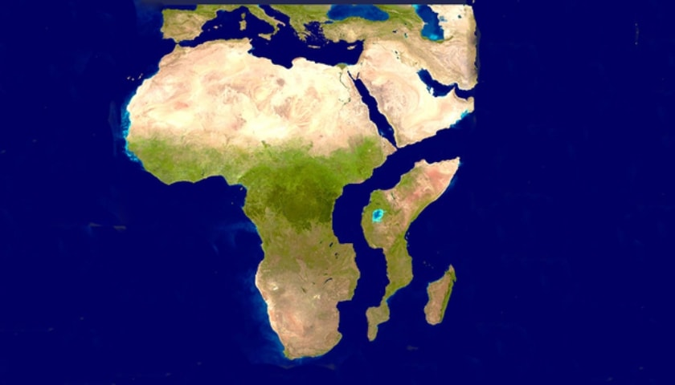

Перший політ людини у космос
Земля́ — третя від Сонця планета Сонячної системи, єдина планета, на якій відоме життя, домівка людства. Земля належить до планет земної групи і є найбільшою з цих планет у Сонячній системі. Землю іноді називають світом, латинською назвою Терра або грецькою — Гея.
Космічний корабель "Восток-1", пілотований 27-літнім Юрієм Гагаріним, 12 квітня 1961 року стартував о 9-07 за московським часом з космодрому Байконур (Казахстан), зробив за 108 хвилин один виток навколо Землі і о 10-55 приземлився поблизу поволзького міста Енгельс (Росія).
Це був перший вдалий політ в космос, коли космонавт живим повернувся на Землю. За американськими даними, котрі не були підтверджені Радянським Союзом, до Гагаріна мінімум чотири космонавта здійснили невдалі спроби облетіти земну кулю, але загинули - Олексій Ледовський (1957 р.), С.Шиборін (1958 р.), А.Мітков (1959 р.) та І.Качур (1960 р.). Після завершення польоту усмішка Гагаріна стала відома усьому світу, його було нагороджено вищими відзнаками СРСР, а в його честь були перейменовані вулиці і зведені монументи в багатьох містах Радянського Союзу.
Тріумф радянської космічної програми став шоком для США, котрі запланували перший космічний політ на травень 1961 року. Більше того, Гагарін здійснив обліт Землі, досягнення, на яке американці спромоглись лише в лютому 1962 року. Однак на цей час Радянський Союз уже здійснив наступний крок - в серпні 1961 року Герман Титов на кораблі "Восток-2" 17 разів облетів Землю, провівши в польоті більше 25 годин.
Формування Землі
Формування Землі почалося за тим же принципом, який лежав в основі появи самого Сонця. Відбувалося це приблизно 4,6 мільярда років тому. Важкі метали (залізо, нікель) в результаті гравітації і стиснення проникали в центр молодої планети, утворюючи ядро. Висока температура створювала всі умови для низки ядерних реакцій.
Відбувся поділ мантії і ядра. Виділення тепла плавило і викидало на поверхню легкий кремній. Він став прототипом першої кори. У міру остигання планети летючі гази проривалися назовні з надр. Це супроводжувалося виверженнями вулканів. Розплавлена лава формувала надалі гірські породи. Газові суміші утримувалися на відстані навколо Землі силою тяжіння. Вони склали атмосферу, спочатку без кисню. Зустрічі з крижаними кометами, метеоритами привели до появи океанів з конденсату парів і розтопленого льоду. Материки роз’єднувались, знову з’єднувалися, плаваючи в гарячій мантії. Це повторювалося багаторазово майже 4 мільярди років.
Цікаві факти про Землю
- Незвичним є факт, що всі планети Сонячної системи крім нашої носять імена з грецької та римської міфології.
- Якщо історію Землі стиснути до 24 годин, то життя б уже з'явилося о четвертій годині ранку, а наземні рослини о 10:24 вечора. В 11:41 вечора в наслідок страшної катастрофи вимерли б динозаври, а людська історія почалася б лише в 11:58:43 вечора.
- За різними підрахунками вчених в нашій галактиці Чумацький Шлях є понад 2 мільярди планет, схожих на Землю, це дає надію сподіватись, що можливо ми не самотні у безмежному Всесвіті.
- Якщо просвердлити тунель крізь Землю, а після цього стрибнути в нього, то вам знадобиться близько 42 хвилин, щоб дістатись до іншої сторони.
- Кожне століття тривалість дня збільшується на 1.7 мілісекунди.
- Землетрус поблизу Японії 2011 року збільшив швидкість обертання Землі та тим самим скоротив день на 1,8 мікросекунди.
- Якщо б у нас не було Місяця, день на Землі тривав би не більше шести годин.
- Якщо Сонце було б розміром з м'яч, то Юпітер був би завбільшки з м'яч для гольфу, а Земля була б маленькою, як горошинка. В середині Сонця можна помістити понад 1.3 мільйона планет по розміру таких як Земля.
- Земля єдине місцем в Сонячній системі, де можна побачити повне сонячне затемнення.
- 40% земної поверхні належить шести країнам світу.
Прогнози на майбутнє
20 МІЛЬЙОНІВ РОКІВ
На підставі нових даних про рух тектонічних плит, вчені вирахували, як будуть переміщатися континенти протягом найближчих сотень мільйонів років. До цього часу схід Азії зміститься на південь і Чукотка перестане бути таким суворим місцем. Австралія і Нова Гвінея навпаки, зрушаться на 1000 кілометрів на північ. У тому ж напрямку зміститься Африка. Вона витіснить Середземне і Чорне моря, перетворивши один з найсприятливіших регіонів планети в пустелю. Крім того, від Африки почне відколюватися східна частина, передає Ukr.Media.
100 МІЛЬЙОНІВ РОКІВ
Австралія стане частиною Азії. Точніше, нового суперконтиненту, який об’єднає всі існуючі материки, крім Антарктиди. Вона, в свою чергу, розколеться на дві частини.
Північний полюс виявиться на території Канади, тому в Скандинавії і Сибірі потеплішає.
200 МІЛЬЙОНІВ РОКІВ
Напрямок руху материків зміниться. Антарктида зміститься в бік Індії, а Північна Америка вирушить назустріч Африці. Атлантичний океан почне звужуватися.
300 МІЛЬЙОНІВ РОКІВ
Вся суша зібрана в один суперконтинент Пангея Проксима.